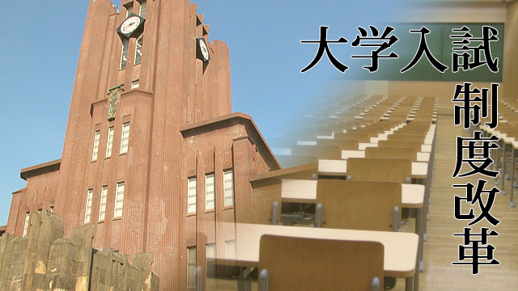

近年話題の大学入試制度改革ですが、文部省の答申を読んだ限り、わたしは非常に不信感を持って眺めています。
1. 入試制度改革と教育改革
センター試験と置き換える「大学入学希望者学力評価テスト」や高校１、２年次の学力を問う「高等学校基礎学力テスト」ばかりが話題になりますが、わたしが注目したいのはそちらよりも高校教育の改革のほうです。
思考力・判断力・表現力を養成するとのことですが、答申の文章を見る限り、簡単にいえば、生徒たちにプレゼンをさせたりディベートをさせたりするイメージです。生徒が主体的に課題を見つけ、意見を持ち、それを他者に伝えようとする姿勢は、教育に携わる人間が理想とする生徒の姿であり、そんな活気ある議論が行われる教室はまさに天国です。しかし…。
2. プレゼン、ディベート授業
10年近く塾で「プレゼン」「ディベート」「論文作成」の授業を担当してきた自分自身の経験を振り返ってみると、この理想郷に至る道のりの遠さを痛感します。
私が担当したのは地域のトップ県立高や国立、私立難関の生徒たちが集うクラスですから、基礎的な学力は相当に高いはずです。そのため「プレゼン」も「ディベート」もそつなくこなします。しかし、内実は教えられた手順を踏んで当たり障りのない意見を述べるにとどまる場合がほとんどでした。
生徒たちにやる気がないわけではありません。ただ、「自分の意見」が特にない場合が非常に多かったのです。
これはある意味当然でしょう。これまでのカリキュラムでは、小学校から高校は自分の意見を作るための「パーツ」である「知識」を手に入れる場所だったのですから。
そして、小学校からの一二年間時間があってもパーツのそろいは不十分な現状です。そんな状況でいざ「自分の意見を作れ」と言われても、知らないことが多すぎてクオリティの高い意見は望めません。とりあえずの思いつきを述べるか、テレビや本の引き写しになってしまいます。
本の読み方やアイデアの出し方の方法論を伝えることで、「形にはなる」ものの、そうして出した意見が真にクオリティが高いものかと問われれば、残念ながらそうとはいえません。もちろん私自身の指導力のなさも原因ですが、それ以上に構造的な問題が潜んでいるように思うのです。
3. 国際バカロレア
このような「時間の問題」と並んでもう一つ不安なのが、答申にあった「国際バカロレアを参考にする」との一言。
バカロレアといえばフランスの大学入学資格試験として有名ですが、この国際バカロレアはフランスとは特に関係がなく、ジュネーブにある国際バカロレア機構という機関が独自に行っている教育プログラムです。プログラムを終了し認定試験を受けると、世界各国の大学入学に使える資格がもらえるため、国際化をうたう日本の高校でも、一部カリキュラムを取り入れているところがあります。
フランスの本家バカロレアのほうは、日本のカリキュラムに親しんだ生徒から見ると「とんでもない難問」を出題することで有名ですので、この国際バカロレアもひょっとしたら同じなのではないかと不安になり、国際バカロレアのサイトに掲載されている見本問題を見てみました。
教科はの五つ。語学二つに「社会」「理科」「数学」といったところ。私は世界史の講師ですので、迷わずをチョイス。この国際バカロレア試験、問題はすべて英語（フランス語やドイツ語も選べるようですが）ですから、問題を読むのがまず面倒くさい。でも拙い語学力を使って読み進めます。
感想は一言。国立最難関大学の個別試験問題から知識問題をなくし、さらに記述問題につけられた誘導（ヒント）をなくしたものだなぁ、と。
たとえばこれ
Compare and contrast the reasons for, and impact of, foreign involvement in two of the following; Russian Civil War; Spanish Civil War; Chinese Civil War.
引用元：国際バカロレア
（ロシア革命・スペイン内戦・国共内戦）
一見自由に答えを書いてよいように見えます。一つ一つの知識を問うのではなく、歴史の流れや意味を問う「思考型」の問題であり、まさに新世代の教育だ！ と。
しかし、ことはそう簡単ではありません。このような問題に「まともな答え」を書くためには、知識を知っていることは「当たり前」なのです。ロシア革命、スペイン内戦、国共内戦のすべての出来事について年号から出来事から人名から、しっかり正確に覚えた上で、それらの知識を根拠として「比較対照して論じ」なければなりません。なんとなくのイメージで答えを書いたとしても全く点数をもらえないのです。
とはいえ、難度としては「無理」というほどでもありません。東大や一橋であれば、このレベル以上の問題は普通に出てきます。たぶん筑波の文系世界史と同じくらい（問題形式も似ていますし）でしょう。
ただ、このような問題を「すべての高校生」に解かせるとなると話は別です。上に述べたように、この問題はこれまでの大学入試の知識偏重型を思考型に変えたものではなく、膨大な知識を要求した上で、「さらに」思考力を求めるものです。本来であればほんの一握りのいわゆる「できる生徒」だけがまともに戦えるレベルなのです。
現状知識の習得だけでもかなりキツい高校生に、プラスアルファでさらに要求するのか、あるいは要求する知識を減らし、稚拙であっても「自分の意見を出す」ことを重視させるのか。
どちらに振るかでその後の様相は一変するでしょう。前者であれば、ほとんどの高校生はついていけなくなってしますし、後者であれば、トップ層のクオリティは下がります。どちらに転んでも、何もかもがバラ色になるわけではなさそうです。
エンライテックの詳細を見る ＞＞